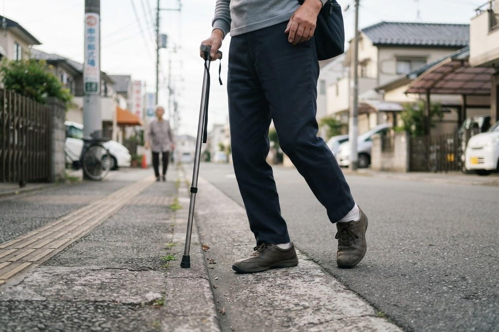

少し歩くとふくらはぎが痛くなり、休むと治まります。年のせいでしょうか？
A. 回答「一定の距離を歩くとふくらはぎが締めつけられるように痛くなり、立ち止まって少し休むとまた歩ける」——この繰り返すパターンは間欠性跛行（かんけつせいはこう）と呼ばれ、足の動脈が動脈硬化で細くなる下肢閉塞性動脈疾患（LEAD）の典型的な症状のひとつとされています。よく似た症状は腰の病気である腰部脊柱管狭窄症でも起こるため、症状だけで見分けることは難しく、診察と検査が手がかりになります。足の動脈の状態は、足と腕の血圧を比べるABI検査などで調べることができます。年齢のせいと決めつけず、糖尿病・喫煙・高血圧などが当てはまる方はとくに一度ご相談ください。

「歩くと痛い、休むと治まる」＝間欠性跛行
歩いているときは足の筋肉がたくさんの血液を必要とします。足の動脈が動脈硬化で細くなっていると、その分の血液を送り届けられず、筋肉が酸素不足になって痛みが出るとされています。立ち止まると必要な血液量が減るため、数分で痛みが治まり、また歩き出せる——これが間欠性跛行の仕組みです。
下肢閉塞性動脈疾患は、症状の進み方によって段階的にとらえられています。国立循環器病研究センターの解説では、初期は足の冷感やしびれ感から始まり、次に間欠性跛行、さらに進むとじっとしていても足が痛む（安静時痛）、最終的に足の潰瘍や壊死に至る段階があるとされています。歩ける距離がだんだん短くなってきた場合は、進行している可能性があります。
また、足の動脈に動脈硬化がある方は、心臓や脳の血管にも同じ変化が起きている場合があるとされています。足の症状は、全身の血管の状態を知るきっかけにもなります。
呼び方について。日本循環器学会・日本血管外科学会の「末梢動脈疾患ガイドライン（2022年改訂版）」では、冠動脈以外の末梢動脈（四肢・頸動脈・腎動脈など）の狭窄や閉塞をまとめて末梢動脈疾患（PAD）と定義し、そのうち足の動脈に起きたものを下肢閉塞性動脈疾患（LEAD）と呼び分けています。以前から使われてきた「閉塞性動脈硬化症（ASO）」は、このうち動脈硬化が原因のもの（動脈硬化性LEAD）にあたります。本ページでは足の症状を扱うため、LEADという呼び方を用います。
腰部脊柱管狭窄症との違い
「歩くと足が痛くなり、休むと治まる」という症状は、腰の神経の通り道が狭くなる腰部脊柱管狭窄症でも起こります。区別の手がかりとして、一般に次のような傾向が挙げられます（あくまで目安で、両方が重なっている方もいらっしゃいます）。
| 項目 | 下肢閉塞性動脈疾患（LEAD） | 腰部脊柱管狭窄症 |
|---|---|---|
| 症状の中心 | ふくらはぎなど筋肉の痛み・締めつけ感 | 腰から下肢へのしびれ・だるさを伴う痛み |
| 楽になる方法 | 立ち止まって休むだけで数分で軽くなる傾向 | 前かがみになる、座る、しゃがむと楽になる傾向 |
| 自転車をこぐとき | 足を使うため症状が出やすい傾向 | 前かがみの姿勢のため比較的こぎやすいとされる |
| 足の脈（足の甲や足首） | 触れにくい・弱いことがある | 通常は触れる |
| 足の冷え・皮膚の色 | 冷たい、色が悪い、毛が薄くなることがある | 通常は保たれる |
| 腰の症状 | 伴わないことが多い | 腰痛を伴うことが多い |
最終的な見分けには、足の脈の触診や血圧の測定、必要に応じた画像検査が用いられます。「整形外科に行くべきか、内科に行くべきか」で迷われることも多い症状ですので、まずは内科・循環器内科でご相談いただいても差し支えありません。
当てはまる方はご注意ください（危険因子）
足の動脈硬化は、心臓や脳の血管の動脈硬化と共通する要因で進むとされています。
こんな項目に当てはまりませんか？
- たばこを吸っている、または長く吸っていた（喫煙は血管を収縮させ、動脈硬化を進める要因とされています）
- 糖尿病があると言われたことがある、血糖値が高めと指摘された
- 高血圧の治療を受けている、または血圧が高めと言われた
- コレステロールや中性脂肪が高いと指摘された（脂質異常症）
- 腎臓の働きが低下していると言われた、透析を受けている
- 心筋梗塞・狭心症・脳梗塞の既往がある
- 60歳以上である
複数当てはまり、歩行時の足の痛みがある方は、一度検査で確かめておくことをおすすめします。
受診の目安
間欠性跛行の段階で気づけると、生活習慣の見直しや治療の選択肢が広がるとされています。
すぐに受診を検討してください
- 歩いていないとき（安静時）にも足が痛む、夜間に足の痛みで目が覚める：血流の低下が進んだ段階のサインとされています
- 足の傷・靴ずれ・水ぶくれがなかなか治らない、じくじくしている
- 足やつま先の色が悪い（青白い、紫色、黒ずんでいる）、冷たい
- 足先の感覚が急に鈍くなった、急に強い痛みと冷たさが出た
- 足の指に潰瘍ができている、悪臭がある
早めの受診をおすすめします
- 歩くと足が痛くなり、休むと治まることを繰り返している
- 痛くならずに歩ける距離が、以前より短くなってきた
- 片足だけ冷たい、左右で皮膚の色や毛の生え方が違う
- 足のしびれや冷感が続いている
- 糖尿病があり、足の感覚が鈍く、傷に気づきにくい
- 喫煙歴があり、健診で動脈硬化や血圧・コレステロールを指摘されている
ABI検査でわかること
ABI（足関節上腕血圧比）は、足首と腕の血圧を測って比べる検査です。健康な状態では足の血圧は腕と同じか少し高いのが普通とされており、足の動脈が細くなっていると足側の血圧が下がるため、その比が低くなります。ベッドに横になり、両腕・両足首にカフ（帯）を巻いて測るだけで、痛みを伴わない検査とされています。
ABIのほか、必要に応じて足の動脈の超音波（エコー）検査、CT検査、血管造影検査などが用いられ、どこがどの程度細くなっているかを確認していきます。
当院での対応
いなだ医院は内科・循環器内科を標榜しており、「歩くと足が痛い」「足が冷たい・しびれる」といったご相談をお受けしています。診察では、痛くなるまでの距離や休むと治まるか、腰の症状の有無、喫煙・糖尿病・血圧・コレステロールなどの背景をうかがったうえで、足の脈の触れ方や皮膚の色、傷の有無、左右差を実際に確認します。血圧測定や心電図、血液検査などで、動脈硬化に関わる全身の状態もあわせて評価していきます。
足の血流を詳しく調べる必要があると判断した場合には、必要に応じて検査や専門医療機関へのご紹介を行います。治療が必要な段階かどうかの見きわめと、次にどこへ相談すればよいかの道筋づけを、かかりつけ医としてお手伝いします。
ご予約なしで当日受診いただけます。診察・検査はいずれも保険診療の対象となります。費用の詳細はお電話でお問い合わせください。受診の際は、保険証（またはマイナ保険証）、お薬手帳、健診結果をお持ちいただくとスムーズです。足を診察しますので、脱ぎ履きしやすい靴下・靴でお越しいただけると助かります。朝7時から診療しておりますので、お仕事前の時間帯もご利用いただけます。
受診時に伝えていただきたいこと
- どのくらい歩くと痛くなるか（何メートル、何分くらいか）
- 痛む場所（ふくらはぎ、太もも、おしり、足の裏など）
- 休むとどのくらいで治まるか、前かがみになると楽になるか
- 歩ける距離が以前より短くなってきていないか
- 安静時の痛み、足の冷え、しびれ、傷の有無
- 喫煙歴（本数と年数）、糖尿病・高血圧・脂質異常症の有無
- 服用中のお薬（お薬手帳をお持ちください）、これまでの心臓・脳の病気
参考にした情報
歩くと足が痛い、休むと治まる——足の血管からのサインかもしれません。年齢のせいと決めつけず、一度ご相談ください。
最終更新：2026年8月26日